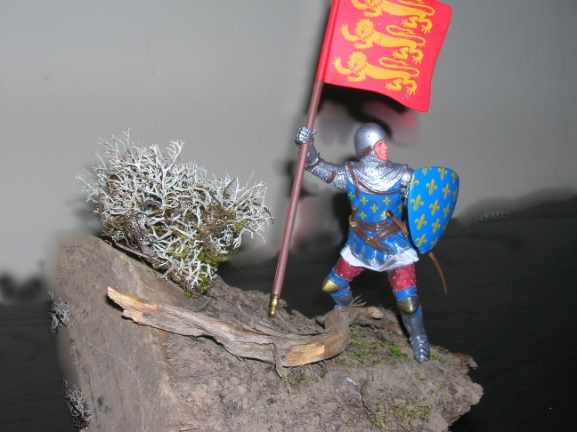
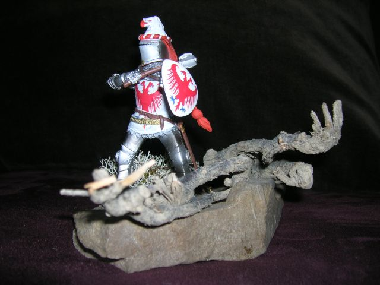
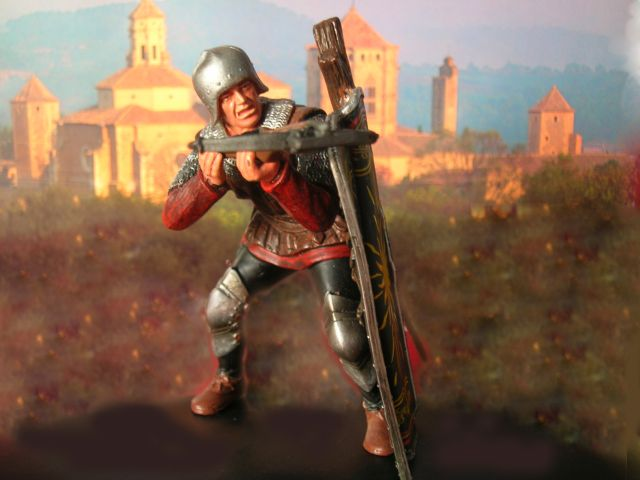
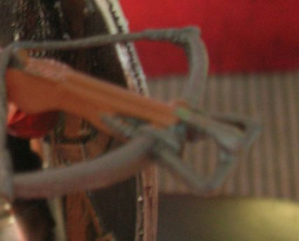
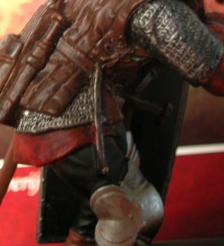
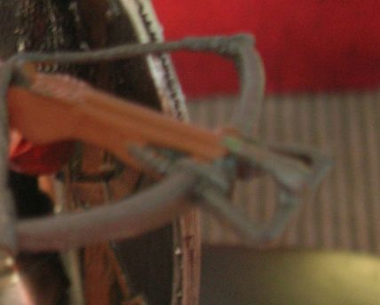
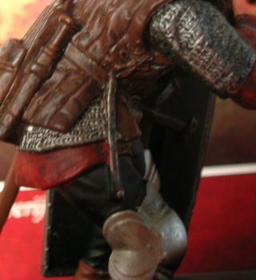
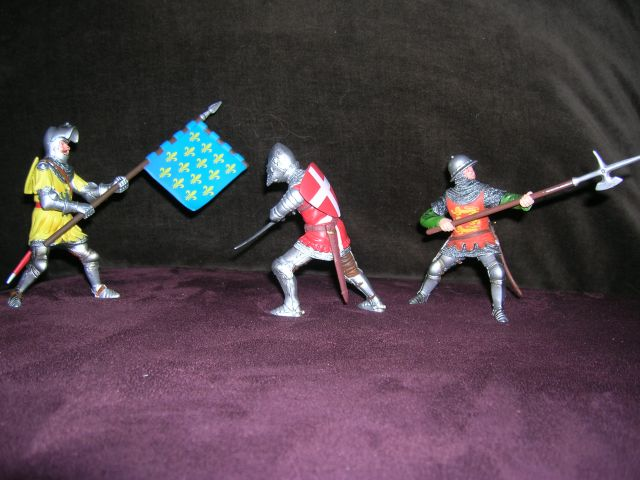
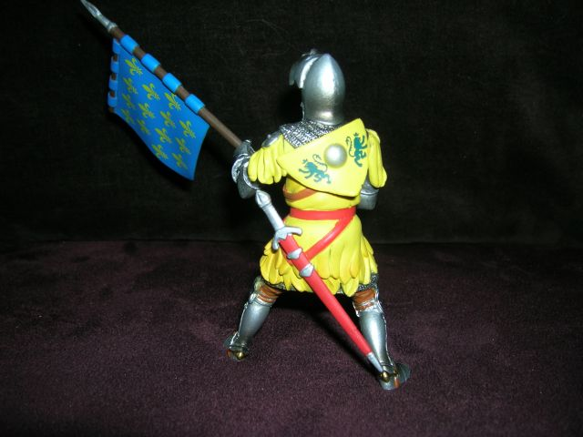

Miniatuur Ridder-figuren:
Ridder met schild en kleed van "France" en vlag van "England":
Ridder met schild "zilver , arend in keel armed azuur":
------------------------------------------------------
Ridder met schild en kleed van "France" en vlag van "England":
Ik vond deze miniatuurridder in een speelgoedwinkel, en stelde
de vraag in de newsgroup 'rec.heraldry' of
deze combinatie historisch en heraldisch correct zou kunnen zijn?

Het wapen van England wordt echter pas gevierendeeld met 'France' rond 1340 door de Engelse koning Edward III.
Ook Francois Velde merkt echter op dat
de Fransen en Engelsen ook reeds meermaals slaags raakten voor de
regeringsperiode van Edward III toen het wapen van England nog niet gevierendeeld
was met 'France'.
Deze soldaat zou dus kunnen gesitueerd worden in de periode voor de 100-jarige oorlog (1337-1453).
Ik ben daarop verder gaan zoeken of de kleding van deze soldaat zou kunnen overeen komen met deze periode.
In het boek "Een historische gids voor Wapenrustingen en wapens" ,
oorspronkelijke titel: "An historical guide to arms and armour" van
Stephen Bull; wordt de evolutie van malienkolder naar harnas nauwkeurig
beschreven aan de hand van historische afbeeldingen. (bv de Maciejovski-bijbel,
Frans, ca 1250)
Tussen 1250 en 1350 zien we inderdaad een tussenstap, waarbij metalen platen worden bevestigd op armen, schenen en voeten boven op de mailienkolder, zoals de miniatuur-soldaat. Deze platen worden vastgehouden met lederen riemen en gespen. Het kleine schild wordt ook met een band over de schouder gehangen. De knie- en elleboogbeschermers zijn op dezelfde manier bevestigd. Het zwaard heeft een schijfvormige knop, typisch voor de periode rond 1250 in Europa. Het hangt aan een riem om het middel die over de wapenrok wordt gedragen. Let ook op de bedekking van de dijen door een leren bescherming met knoppen. (pourpoint). De voetplaten die hier samen met de sporen worden gedragen, worden ook sollerets genoemd. Onder de malien zien we ook een tabberd, een stoffen kiel. De stalen handschoenen beginnen te verschijnen op het einde van de 13de eeuw.
De simpele ronde helm is een zogenaamde Spangenhelm die lange tijd in gebruik was. Rond 1340 ontstaat de grote helm, een allesomvattende cilindrische helm waarbij ook het gezicht bedekt wordt. Ook worden de lichtere helmen meer puntig in de 14de eeuw, en soms voorzien van een vizier.(basinet of lichte vizierhelm). Het prachtige graf van Edward, de prins van Wales, de Zwarte Prins genaamd (1330-1376) toont de prins met een dergelijke helm in een harnas van pantserplaten.
De miniatuur soldaat kan dus volgens zijn wapens en uitrusting worden gesitueerd tussen 1250 en 1350, eerder naar het einde van de 13de eeuw toe.

.
let op de details, die ook hier weer zeer realistisch zijn:
  
 
De stralende zon "sun in splendour" is het embleem van de Yorks.
Let op de beugel vooraan de boog en de spanhaak aan de gordel , om de kruisboog op te kunnen spannen.

